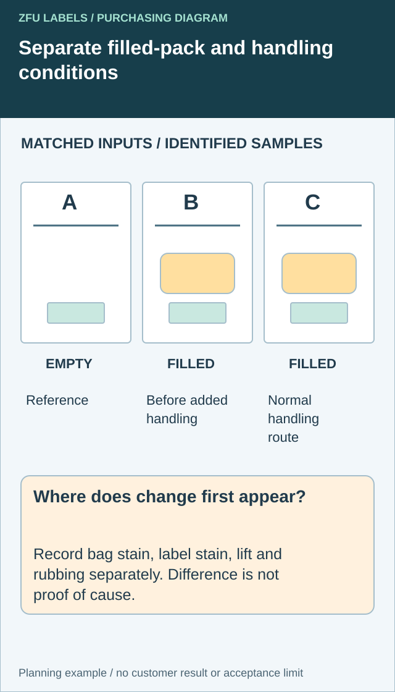

Keep the filled bag and outside contact distinguishable
Before changing the label, name when the mark first appears and which side of the packaging is affected. Keep the actual bag, product, label position and holding window identifiable. A photograph after several handling steps cannot by itself tell the technical reviewer how the exposure reached the label.


Prepare a comparison plan with the bakery's responsible operations and quality owners. An empty bag with the label can provide a handling/storage reference. A normally filled bag observed before additional outside handling can show a different condition. A filled bag following the intended delivery or serving sequence adds that real handling route. Use separate identified samples; do not present a sequence assembled from different anonymous bags as one package's history.
| Comparison condition | Hold as consistent as practical | Observation to record |
|---|---|---|
| Labeled empty bag | Bag/label identity, placement and storage | Starting appearance and any change without the filled product |
| Labeled filled bag before added handling | Actual food state, position and agreed time | Bag and label appearance before that next contact |
| Filled bag through normal handling | Same intended product and package route | Where contact occurs and what first changes |
| Any changed input | Identify the actual substitution | Limit the conclusion instead of calling it equivalent |
This is a comparison structure, not a laboratory migration test or a prescribed sample count. The conditions do not isolate every possible variable. Keep product temperature, holding arrangement and unavoidable handling differences in the record; a difference between groups is a reason for further review, not proof of a chemical mechanism.
Record stain, edge lift and print removal separately. Also inspect the bag outside the label. If the bag is visibly changing before external handling, the package supplier may need to join the discussion. If a repeated hand contact coincides with the affected zone, review that handling and the label construction without claiming coincidence proves cause.
Avery Dennison's GreaseProtect page describes a particular grease-resistant offering. It supports asking about a construction designed for the exposure, not claiming every paper label has that performance or that this site supplies that product. A barrier or food-contact statement needs its own applicable documentation.
Use the comparison to request a targeted alternative: different placement, a reviewed bag arrangement or an identified label construction. Confirm which option addresses the observed route and what evidence remains missing. Avoid buying an expensive finish to conceal an unresolved filled-package condition.
The paper bag is not one uniform surface
A greasy label can be part of a bag problem, an outside-handling problem or a combination. Compare identified packages before upgrading only the printed face, and keep staining, lifting and rubbing as separate observations.
Avery Dennison describes grease-resistant label constructions as an option for oily applications. That is a possible material direction, not a promise that every printed bakery label is greaseproof or suitable for direct food contact. Approve the exact construction and documentation.
Two bakeries, two practical decisions
Imagine a composite bakery selling dry cookies in folded paper bags. Its sticker mostly acts as a closure and brand mark. I would test the folded thickness and how easily staff can apply it during the rush. An expensive barrier film may add little if grease never reaches the label.
A second composite bakery packs warm butter pastries with a clear window. Here the bag may receive grease marks during normal handling. I would move the label to a cleaner panel if possible, then compare a suitable printed film or protected paper construction. A beautiful uncoated paper face that stains before the customer gets home is not a premium outcome.
Separate the bag, adhesive and print questions
Try a few filled bags using normal product temperature and closure method. Mark where oil appears after expected holding time. Apply samples to clean and realistic-use bags, then inspect adhesion and print appearance separately. Do not use a wiped sample to approve a process that never wipes bags. If the label touches a food-contact area, ask the bag and label suppliers to review the applicable construction and regulatory documentation together.
| Symptom | First comparison | Buyer decision |
|---|---|---|
| Edge lifts at a fold | Placement and fold thickness | Move or resize the label |
| Face shows oil stain | Printed face and protective finish | Trial suitable barrier options |
| Ink rubs during handling | Print process and finish | Change protective construction |
| Bag itself becomes greasy | Food wrap and bag choice | Review package before label cost |
Approve the completed retail pack
Run the sample through the bakery's real packing sequence, carry bag and display time. Photograph it at packing and after normal holding. Record whether failure is a peel, stain or artwork readability problem. Those are different questions and can require different fixes.
Our buying view
Move the label before buying the most expensive film
If the bag has a clean flat panel, I would use it. Material upgrades make sense when exposure cannot be designed away, but I would not charge every small bakery for grease protection before testing where its label actually lands.
A useful bakery-label brief
- Filled sample bags and the closure sequence.
- Food temperature and expected display or delivery time.
- Window, folds and likely grease path marked on the bag.
- Artwork, label size, application method and monthly volume.
- Required package-contact documentation for the exact use.
For the label aesthetic itself, see kraft paper labels for food packaging. For material trade-offs, compare paper versus film labels.
Frequently asked questions
Will a kraft-look label resist pastry grease?
Appearance alone does not establish oil resistance. Test the intended printed face, finish and bag with the actual packaged food.
Where should the label go?
Use the flattest stable panel clear of folds, windows and the likely grease path, then verify it after normal handling.
Does food packaging require special documentation?
Requirements depend on the package design and whether any component has direct or indirect food contact. Request relevant documentation for the specific construction.
Related buyer guides
Continue with Flour Sack Labels: Keep Batch Information Clear in a Dusty Mill for a focused purchase checklist.
Resolve the specific label handoff
Include bag and label construction, filled-product condition, exact placement, holding window and sample-linked stain/handling observations.
Prepare the label specification inquiry. The contact page opens an email draft for review; send files through the listed email or WhatsApp route. Actual supply scope, samples, pricing and timing require project confirmation.
Related decisions: Olive Oil Bottle Labels: Plan for Drips, Glass and Legibility; Kraft Paper Labels: Approve the Brown Stock Behind the Printed Color; Paper vs Film Food Labels: Compare Complete Constructions